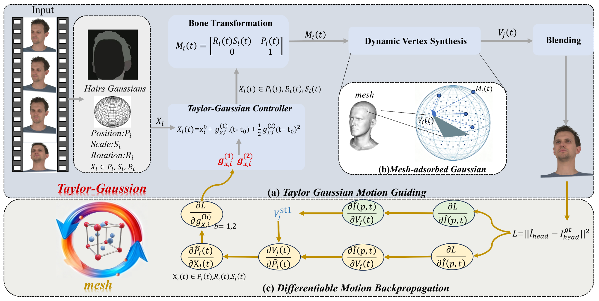

TGMF: Taylor Gaussian Motion Field for Dynamic Head Avatars
Shanghai University · Nullmax Co., Ltd.

Abstract
3D Gaussian Splatting has recently enabled high-quality head avatar reconstruction and animation. However, existing dynamic head-avatar methods usually rely on fixed Gaussian--mesh bindings or implicit deformation networks that do not explicitly model the geometric relationship between local Gaussian motion and global mesh deformation. As a result, they remain prone to local distortion, temporal blur, and drift under large expressions or rapid head motion. This paper proposes Taylor Gaussian Motion Field (TGMF), a locally continuous dynamic field that parameterizes motion-related Gaussian attributes using a second-order Taylor formulation around a reference state. Rather than treating motion as a frame-conditioned black-box mapping, TGMF explicitly associates Gaussian evolution with interpretable velocity and acceleration coefficients, yielding a compact, differentiable, and physically meaningful representation of local dynamics. To couple local Gaussian motion with global head geometry, we further introduce a unified affine motion formulation and a mesh-coupled optimization strategy that allows Gaussian trajectories to drive mesh deformation while using mesh reconstruction errors to refine the Gaussian motion field through bidirectional feedback. This design improves temporal consistency without sacrificing local flexibility in highly dynamic regions such as hair boundaries and facial contours. Experiments on NeRSemble show that TGMF achieves stronger rendering fidelity than publicly reproducible baselines in both novel-view synthesis and self-reenactment, while producing smoother and more stable dynamic motion.